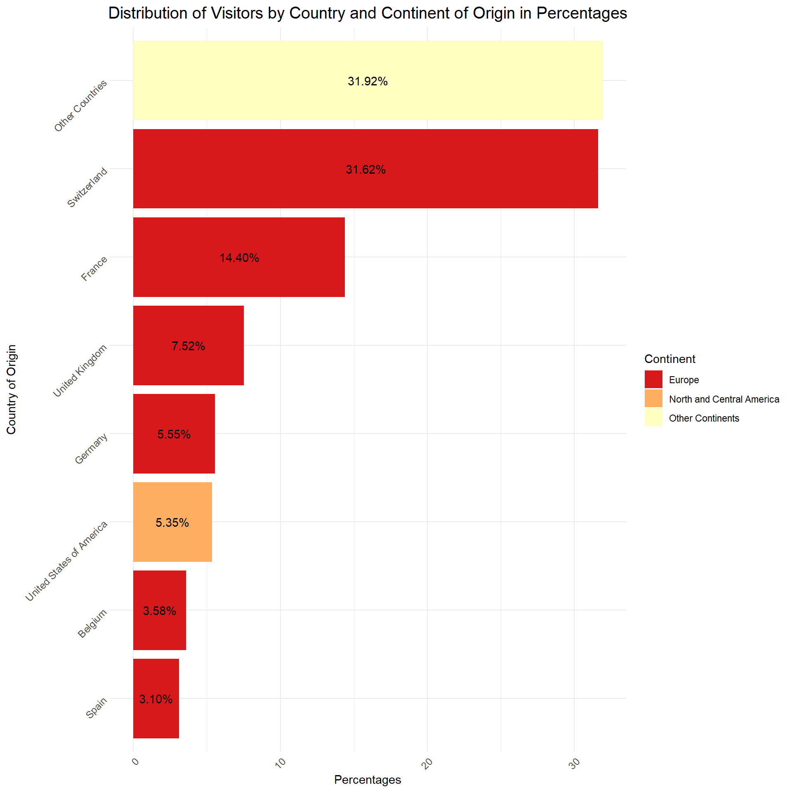
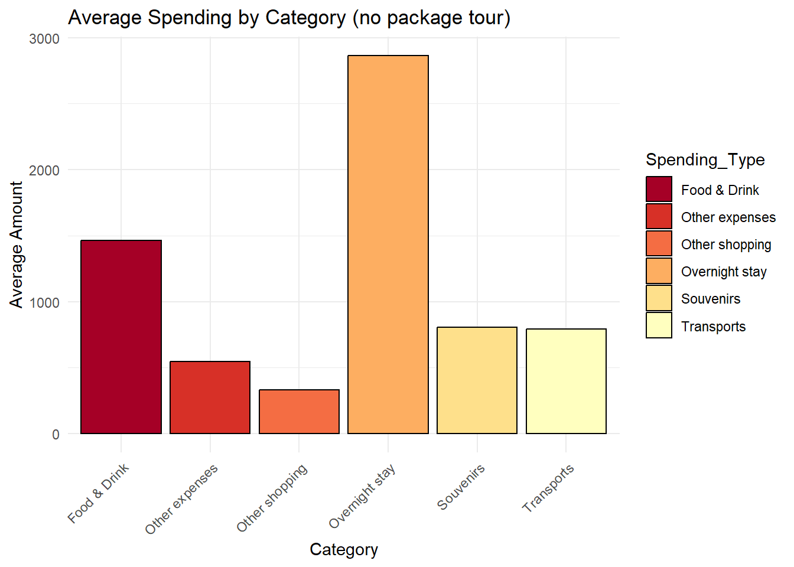
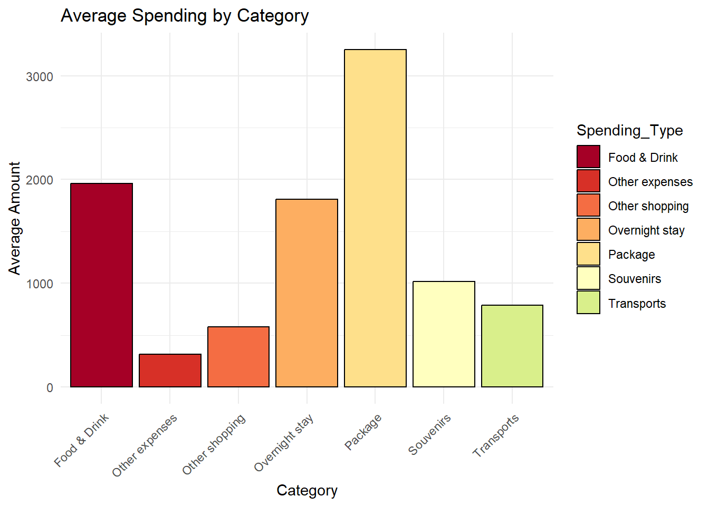
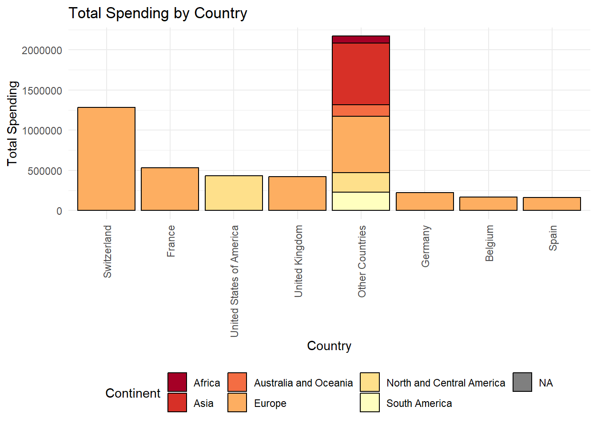
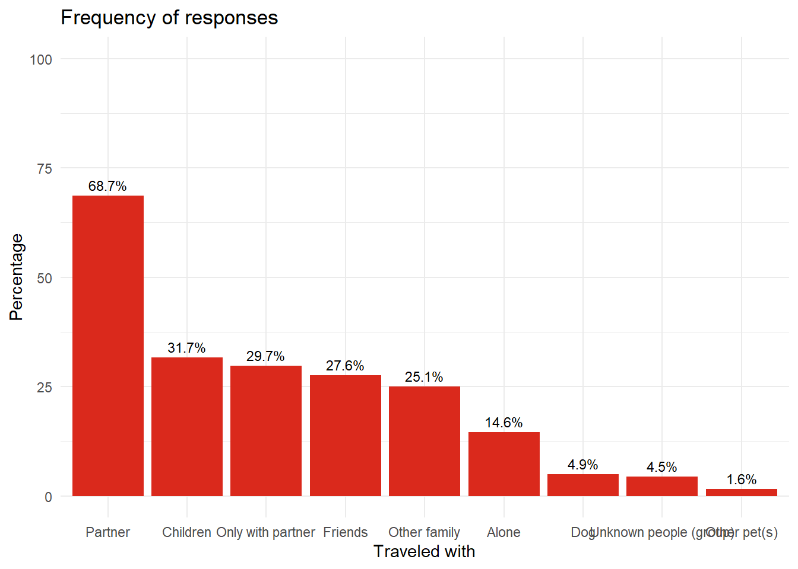

Global Distribution of Visitors to the Canton of Vaud by Continent
With the data gathered from the survey, we have first explored the overall distribution of nationalities of the visitors. Therefore, you will find here a graph providing the percentage of visitors per continent that came to visit the Canton of Vaud. You will find more details about the number of occurrences and percentages per continent in the Annex.
Code
### F05_01.ENG #### nb of occurrences by country and continents OccurencesCountry <- data %>%group_by(data$F05_02_ENG) %>%count(sort =TRUE)OccurencesContinent <- data %>%group_by(data$F05_01_ENG) %>%count(sort =TRUE)# Continent in percentagesF05_01_PCT <- data %>%group_by(F05_01_ENG) %>%summarise(Count =n()) %>%mutate(Percentage = Count /sum(Count)) %>%arrange(desc(Percentage)) %>%rename(Continent_of_origin = F05_01_ENG)# plot numbers continent ggplot(F05_01_PCT,aes(x=reorder(Continent_of_origin, Percentage*100),y=Percentage*100,fill=Continent_of_origin)) +geom_bar(stat="identity") +coord_flip() +theme_minimal() +labs(x="Continents of Origin",y="Percentages",title="Distribution of Visitors per Continent in Percentage, in the whole canton") +theme(legend.title =element_blank(),legend.position ="none",plot.title =element_text(hjust =0.5, size =10),axis.text.x =element_text(angle =45, hjust =1)) +geom_text(aes(label=sprintf("%.2f%%", Percentage*100)),position=position_dodge(width=-0.5),vjust=-0.01,hjust=-0.1,size =3) +ylim(0, 90)
We notice that a large part of the people surveyed were coming from Europe (approx. 78%), followed by people coming from Asia (approx. 8%), North and Central America (approx. 8%), South America (approx. 3%) Australia and Oceania (approx. 2%) and finally Africa (approx. 1%). Again, these results were concerning the whole canton.
Global Distribution of Visitors to the Canton of Vaud by Nationality
We have then decided to explore the distribution in percentage of the nationalities per continent. You will find here a graph showing our results. To enhance visibility, we have gathered most of the countries in the variable “Other Countries” and added it on the graph with the remaining top 7 most represented countries in the list. You can find the whole table about the number of occurrences and percentages per nationality in the Annex.

Our results show that Switzerland is the nationality the most represented among all the visitor (approx. 31.5%). Therefore, there are a lot of domestic visitors travelling to the canton of Vaud. Also, we see again that the most represented nationalities are Europeans, such as France (approx. 14.5%), United Kingdom (appox. 7.5%), Germany (approx. 5.5%), Belgium (approx. 3.5%) and finally Spain (approx. 3%). The only other nationality coming from a other continent represented here is the United States of America (approx. 5.5%). Proximity could be for instance one of the main factor explaining these results.
City and District Visitor Distributions
Per city, the percentage of each visitor’s country of origin, relative to the number of visitor of the city
Now in order to know more precisely about the destination of the visitors, we have decided to gather by city the percentage of country of origin.
Code
# Counting the number of tourists by city and nationalitytourists_by_nationality <- data %>%group_by(F105_Code, F05_02_ENG) %>%summarise(Count =n(), .groups ='drop')# Calculating the total number of tourists per citytotal_tourists_per_city <- tourists_by_nationality %>%group_by(F105_Code) %>%summarise(TotalCount =sum(Count), .groups ='drop') %>%arrange(desc(TotalCount)) #top 10 cities # top_10_cities <- total_tourists_per_city %>%# arrange(desc(TotalCount)) %>%# head(10)# Joining the counts back to the detailed breakdown and calculating the ratio# nationality_ratio_per_city <- tourists_by_nationality %>%# left_join(total_tourists_per_city, by = "F105_Code") %>%# mutate(Ratio = round((Count / TotalCount),3)) %>%# select(F105_Code, F05_02_ENG, Ratio) %>%# rename(City = F105_Code, Country_of_origin = F05_02_ENG)# Joining the counts back to the detailed breakdown and calculating the rationationality_ratio_per_city <- tourists_by_nationality %>%left_join(total_tourists_per_city, by ="F105_Code") %>%arrange(desc(TotalCount))# Step 1: Identify the top 10 cities by TotalCounttop_10_cities <- nationality_ratio_per_city %>%distinct(F105_Code, TotalCount) %>%arrange(desc(TotalCount)) %>%slice_head(n =10) %>%pull(F105_Code)# Step 2: Split the data into top 10 cities and the remaining citiestop_cities_data <- nationality_ratio_per_city %>%filter(F105_Code %in% top_10_cities)other_cities_data <- nationality_ratio_per_city %>%filter(!F105_Code %in% top_10_cities)# Step 3: Aggregate the remaining cities into a single "other" observationother_summary <- other_cities_data %>%group_by(F05_02_ENG) %>%summarise(F105_Code ="Other",Count =sum(Count),TotalCount =sum(TotalCount) )# Step 4: Combine the top 10 cities with the "other" observationfinal_data <-bind_rows( top_cities_data, other_summary)NB_TotalCount_Other <- final_data %>%add_row(F105_Code ="Other Continents", F05_02_ENG ="Other Countries", Count =sum(final_data$Count[300:346]), TotalCount =sum(final_data$TotalCount[300:346])) %>%filter(F105_Code =="Other Continents")# Assuming your data frame is named `final_data`final_data <- final_data %>%mutate(TotalCount =if_else(F105_Code =="Other", 3390, TotalCount)) # Step 2: Group by F105_Code and compute the ratiofinal_data <- final_data %>%group_by(F105_Code) %>%mutate(Ratio =round(Count / TotalCount, 3)) %>%ungroup()final_data <- final_data %>%group_by(F105_Code, F05_02_ENG) %>%arrange(desc(Ratio))# Step 3: Sum the Ratio for a specific city (e.g., "Lausanne")sum_ratio_lausanne <- final_data %>%filter(F105_Code =="Morges") %>%summarise(SumRatio =sum(Ratio)) %>%pull(SumRatio) ###why > 1 ??
`summarise()` has grouped output by 'F105_Code'. You can override using the
`.groups` argument.
Code
# Plotlyplot <-plot_ly(final_data, x =~F105_Code, y =~Ratio, color =~F05_02_ENG, type ='bar') %>%layout(title ='Stacked Bar Plot of Ratios by City and Nationality',xaxis =list(title ='City', tickangle =-45),yaxis =list(title ='Ratio'),barmode ='stack',showlegend =FALSE) # Remove the legendplot
Code
# Create the stacked bar plot# ggplot(final_data, aes(x = F105_Code, y = Ratio, fill = F05_02_ENG)) +# geom_bar(stat = "identity") +# labs(title = "Stacked Bar Plot of Ratios by City and Nationality",# x = "City",# y = "Ratio",# fill = "Nationality") +# theme_minimal() +# theme(axis.text.x = element_text(angle = 45, hjust = 1),# legend.position = "none")
The percentage here was in fact a ratio representing the number of people from one particular nationality over the total number of visitors in each city. Unfortunately, as very few data has been collected in some cities, the ratio of visitor from one nationality over all the visitor surveyed can be really large (up to 1, in point of percentage). On the other hand, as data from some other city gathered a lot of answers, we observe that some country of origin (e.g. Austria in Lausanne) were only accounting for 0.2% of the total visitors.
Ratio of each country of origin relatively to the number of tourist surveyed in each district
In the same process, let’s now explore the country of origin ratio per district of tourism.
Code
# ratio of each nationality relatively to the number of tourist surveyed in each district F105_OrgCodetourists_by_nationality <- data %>%group_by(leaflet_districts, F05_02_ENG) %>%summarise(Count =n(), .groups ='drop')# Calculating the total number of tourists per citytotal_tourists_per_city <- tourists_by_nationality %>%group_by(leaflet_districts) %>%summarise(TotalCount =sum(Count), .groups ='drop')# Joining the counts back to the detailed breakdown and calculating the rationationality_ratio_per_city <- tourists_by_nationality %>%left_join(total_tourists_per_city, by ="leaflet_districts") %>%mutate(Ratio =round((Count / TotalCount),3)) %>%select(leaflet_districts, F05_02_ENG, Ratio) %>%rename(District_tourism = leaflet_districts,Country_of_origin = F05_02_ENG)datatable(nationality_ratio_per_city, options =list(pageLength =10,class ="hover",searchHighlight =TRUE), rownames =FALSE)
Again, the low number of data available in our data don’t allow us to get really satisfying results for every city surveyed.
Domestic tourism
As Swiss citizens accounted for more than 30% of the visitors surveyed, we have decided to know more about the percentages of people coming from Switzerland, visiting Switzerland. Therefore, here is the distribution of visitors per canton of origin.
Code
## Séparation cantons suisse-allemands# Swiss german column# unique(data[data$F05_02 == "Schweiz", ]$F05_03)# Seratation german cantons (subjective) swiss_german_cantons =c("Luzern", "Schwyz", "Bern", "Neuenburg", "Aargau","Zürich", "Basel-Stadt", "Basel-Landschaft", "Obwalden","Appenzell Innerrhoden", "Schaffhausen", "Thurgau","St. Gallen", "Solothurn", "Uri", "Zug", "Nidwalden","Appenzell Ausserrhoden")# Binary column for swiss germans data$swiss_german <-ifelse(data$F05_02 =="Schweiz"& data$F05_03 %in% swiss_german_cantons, 1, 0)# count ratio from each german canton over the data Inside_Switzerland <- data %>%select(F05_02_ENG, F05_03, swiss_german) %>%filter(F05_02_ENG =="Switzerland") %>%group_by(F05_03) %>%summarise(Count =n()) %>%mutate(Percentage = Count/sum(Count)) %>%rename(Canton = F05_03)# Merging the population data with the original datapopulation_data <-data.frame(Canton =c("Aargau", "Appenzell Ausserrhoden","Appenzell Innerrhoden", "Basel-Landschaft","Basel-Stadt", "Bern", "Freiburg", "Genf", "Graubünden","Jura", "Luzern", "Neuenburg", "Nidwalden", "Obwalden","Schaffhausen", "Schwyz", "Solothurn", "St. Gallen","Tessin", "Thurgau", "Uri", "Waadt", "Wallis", "Zug","Zürich"),Population =c("704000", "56200", "16200", "292000", "204000","1045000", "338000", "499000", "200000", "74400","433000", "176000", "44300", "38600", "84000","166000", "278000", "515000", "353000", "282000","37000", "817000", "350000", "130000", "1605000"))# replacing "Appenzell Innerrhoden " by "Appenzell Innerrhoden"Inside_Switzerland$Canton[3] <-"Appenzell Innerrhoden"# Merge the population data with your original datadata_merged <-merge(Inside_Switzerland, population_data,by.x ="Canton",by.y ="Canton",all.x =TRUE)data_merged$Population <-as.numeric(data_merged$Population)# Calculating the ratio of occurrences per population for each cantonInside_Switzerland_ratio <- data_merged %>%mutate(Percentage = Count/sum(Count)) %>%mutate(Ratio = Count / Population) %>%mutate(Scaled_Ratio = Ratio /sum(Ratio)) %>%select(Canton, Count, Percentage, Population, Ratio, Scaled_Ratio)# # Now output the table with your custom settings# datatable(Inside_Switzerland_ratio,# options = list(pageLength = 10,# class = "hover",# searchHighlight = TRUE,# columnDefs = list(list(targets = 4, visible = FALSE))),rownames = FALSE) %>%# formatPercentage('Percentage', 2) %>%# formatPercentage('Ratio', 5) %>%# formatPercentage('Scaled_Ratio', 2)
Warning: `position_dodge()` requires non-overlapping x intervals.
As we can see on this table, the biggest part of the Swiss visitors surveyed in this study are people from Vaud (approx. 20%), Bern (approx. 16%) and Zurich (approx. 12%).
Now among the swiss german cantons, let’s explore the distribution of the canton
Code
# Now how much percentage do swiss germans represent in thisSwiss_germans_percentage <- Inside_Switzerland %>%filter(Canton %in% swiss_german_cantons) %>%mutate(Percentage =paste0(round((Count/sum(Count)) *100, 1), "%"))# sum(Swiss_germans_percentage$Percentage)datatable(Swiss_germans_percentage,rownames =FALSE,options =list(pageLength =10,class ="hover",searchHighlight =TRUE))
Bern, Zurich and Aargau are the top 3 cantons represented among all swiss german cantons (with in approx. 26.5%, 19.5% and 10.5% in the order)
Now, for interpretability and visualisation, let’s see the proportion of swiss german people over the rest of the swiss citizens surveyed:
Code
# Assuming 'Inside_Switzerland' has a column 'Canton' and you have a vector 'swiss_german_cantons' listing Swiss German cantonsInside_Switzerland <- Inside_Switzerland %>%mutate(is_swiss_german = Canton %in% swiss_german_cantons)# Calculate total countstotal_counts <- Inside_Switzerland %>%summarize(total =n())# Calculate counts for Swiss German cantons and otherscounts <- Inside_Switzerland %>%group_by(is_swiss_german) %>%summarize(count =n(), .groups ='drop')# Calculate percentagescounts <- counts %>%mutate(percentage = count / total_counts$total *100)
Code
# Plotggplot(counts,aes(x = is_swiss_german,y = percentage,fill = is_swiss_german)) +geom_bar(stat ="identity") +scale_x_discrete(labels =c("Others", "Swiss germans")) +theme_minimal() +theme(legend.position ="none") +geom_text(aes(label=sprintf("%.2f%%", percentage)),position=position_stack(vjust=0.5)) +labs(title ="Percentage of Swiss German Cantons vs Other Cantons",x ="Canton Type",y ="Percentage") +ylim(0, 90)

Over all the swiss citizen, we can see that 68% of them are coming from the swiss german part.
Partie Lodrik
Where did they stay? (For example: yes, they went to Montreux, but what type of accommodation, what price?
Most popular destinations in the canton Vaud
Let’s now dive into the subject of the location of their stay. First, let’s have a look at the most popular locations in the canton Vaud. Given the architecture of the study this gives us the city where most people answer the survey.
From this plot, we can see that the most pupular city in the canton of Vaud is Lausanne. Let’s now have a look at the type of accommodation where the visitor stayed in the canton of Vaud. We took the liberty to remove the 46 observation where the type of accommodation was not specified. We can now concentrate more our attention on the district where the people stayed.
As we can see, out of the 67 city surveyed in the 10 district, the most popular district is Lausanne. This is not really suprising because of the way the data was collected. More people were surveyed in these city/districts than other smaller one. It is still interesting to have a look to keep this in mind.
Type of Accommodation by country
Let’s dive deeper into the most popular type of accomodation per contry. You can find below a plot showing the proportion of each type of accomodation for all the contries and for the most represented countries in our data, Switzerland, France, UK, Germany, USA, Belgium and Spain.
The most popular accommodation type in the canton of Vaud, according to a survey of 2,440 respondents, is the Hotel/SPA House, selected by 777 individuals. Notably, 293 people chose to stay at campsites. For Swiss respondents specifically, campsites rise to the second most popular option, with nearly 30% opting for this type of accommodation, while the Hotel/Spa House remains the top choice. Interestingly, the free apartment/house is highly favored by visitors from France, the United Kingdom, Germany, and Belgium, ranking in their top two choices. Conversely, visitors from the United States tend to prefer hotels, rented apartments/houses, or other types of accommodations over free apartments. Additionally, campsites are notably less popular among American visitors. Below, a word cloud illustrates other favored types of accommodation.
Word Cloud
Among the 491 respondents who did not choose traditional accommodations, the most popular alternative was staying with family, as indicated by 29 individuals. Staying with friends was the second most common choice, favored by 27 respondents, while staying at someone else’s house ranked third with 22 mentions.
Hotels Stars
Now, let’s have a look at the hotel standing of the places where the people stayed. This will highlight the quality of the stay per district.
Average Stars per District
As we can see on the graph above, the best average is optain in Ouest lausannois with an average of 4 stars. But this statistics is not very representative to the reality. Only 13 people answered the survey in this district which is not enough to have a good idea of the quality of the hotels in this district. The second best region after Ouest lausannois is Riviera-Pays-d’Enhaut with an average of 3.66 stars. This district got with 623 observation which is more representative. This high score for the Region of Riviera-Pays-d’Enhaut is not really surprising given the fact that this place is well know for its luxury hotels.
Spendings
Expenses and where they come from, when, where and for which sector?
Percentage of people with package & without package
To begin with, we can notice that there are 2 types of traveller spendings: the ones who come in Switzerland with no package, meaning they spend on different categories that are not included in the packages, and the ones who come with a package, which usually already includes some different categories.
Code
# Calculate the number of non-NA entries for each type of spendingspending_counts <- data %>%summarize(Package =sum(!is.na(F82_Total)),WithoutPackage =sum(!is.na(F81_Total)) ) %>%gather(key ="PackageType", value ="Count")# Calculate percentagestotal_records <-sum(spending_counts$Count)spending_counts <- spending_counts %>%mutate(Percentage = (Count / total_records) *100)# Plot the percentages with the percentage shown on the barsggplot(spending_counts, aes(x = PackageType, y = Percentage, fill = PackageType)) +geom_bar(stat ="identity") +geom_text(aes(label =sprintf("%.1f%%", Percentage)), # Format the labels to one decimal placeposition =position_stack(vjust =0.5), # Adjust text to be inside the barscolor ="black") +labs(title ="Percentage of Observations With and Without Package",x ="Type of Spending",y ="Percentage (%)") +scale_fill_brewer(palette ="Pastel1") +# Aesthetically pleasing color palettetheme_minimal() +theme(axis.text.x =element_text(angle =45, hjust =1))

A majority of people travelling in Vaud come without a package.
spending_data <-data.frame(Spending_Type =c("Overnight stay", "Transports", "Food & Drink", "Souvenirs", "Other shopping", "Other expenses"),Amount =c(mean(data$F81_01, na.rm =TRUE), mean(data$F81_02, na.rm =TRUE),mean(data$F81_03, na.rm =TRUE),mean(data$F81_04, na.rm =TRUE),mean(data$F81_05, na.rm =TRUE),mean(data$F81_06, na.rm =TRUE)))ggplot(spending_data, aes(x = Spending_Type, y = Amount, fill = Spending_Type)) +geom_bar(stat ="identity", color ="black") +labs(title ="Average Spending by Category (no package tour)", x ="Category", y ="Average Amount") +theme_minimal() +theme(axis.text.x =element_text(angle =45, hjust =1)) # Rotate x-axis labels for readability

Code
spending_data_package <-data.frame(Spending_Type =c("Package", "Overnight stay", "Transports", "Food & Drink", "Souvenirs", "Other shopping", "Other expenses"),Amount =c(mean(data$F82_01[data$F82_01 <=30000], na.rm =TRUE), # Ici on modifie pour inclure seulement les packages qui coûtent en dessous de 30'000 CHF. On assume que les packages qui coûtent au dessus de ce montant ne sont pas en CHF, et donc biaisent le sample.mean(data$F82_02, na.rm =TRUE),mean(data$F82_03, na.rm =TRUE),mean(data$F82_04, na.rm =TRUE),mean(data$F82_05, na.rm =TRUE),mean(data$F82_06, na.rm =TRUE),mean(data$F82_07, na.rm =TRUE)))ggplot(spending_data_package, aes(x = Spending_Type, y = Amount, fill = Spending_Type)) +geom_bar(stat ="identity", color ="black") +labs(title ="Average Spending by Category", x ="Category", y ="Average Amount") +theme_minimal() +theme(axis.text.x =element_text(angle =45, hjust =1))
With these plots, we can clearly observe that there is a difference in spendings for people who travelled with a package compared to the ones travelling without a spending package. Overall, the main expenses of people with a package is the package itself, meaning that most of the other variables are already included in the package. On the other hand, without the package, it is interesting to see that the main spending is on the overnight stay, then the food & drinks and finally the souvenirs.
# Create a vector of countries to group as "other countries"countries_to_group <-c("Switzerland", "France", "United Kingdom", "Germany", "United States of America", "Belgium", "Spain")# Aggregate total spending for F81_Total and include continentstotal_spending_F81 <- data[data$F81_Total <30000,] %>%group_by(F05_02_ENG, F05_01_ENG) %>%summarize(Total_Spending_F81 =sum(F81_Total, na.rm =TRUE)) %>%mutate(F05_02_ENG_grouped =if_else(F05_02_ENG %in% countries_to_group, F05_02_ENG, "Other Countries")) %>%group_by(F05_02_ENG_grouped, F05_01_ENG) %>%summarize(Total_Spending_F81 =sum(Total_Spending_F81)) %>%arrange(desc(Total_Spending_F81))# Plot for F81_Total with continent colorsggplot(total_spending_F81, aes(x =reorder(F05_02_ENG_grouped, -Total_Spending_F81), y = Total_Spending_F81, fill = F05_01_ENG)) +geom_bar(stat ="identity") +labs(title ="Total Spending by Country", x ="Country", y ="Total Spending") +scale_fill_brewer(palette ="Set3", name ="Continent") +# Color based on continenttheme_minimal() +theme(axis.text.x =element_text(angle =90, vjust =0.5, hjust=1),legend.position ="bottom") # Position the legend at the bottom
Code
# Create a vector of countries to group as "other countries"countries_to_group <-c("Switzerland", "France", "United Kingdom", "Germany", "United States of America", "Belgium", "Spain")# Aggregate total spending for F82_Total and include continentstotal_spending_F82 <- data[data$F82_Total <30000,] %>%group_by(F05_02_ENG, F05_01_ENG) %>%summarize(Total_Spending_F82 =sum(F82_Total, na.rm =TRUE)) %>%mutate(F05_02_ENG_grouped =if_else(F05_02_ENG %in% countries_to_group, F05_02_ENG, "Other Countries")) %>%group_by(F05_02_ENG_grouped, F05_01_ENG) %>%summarize(Total_Spending_F82 =sum(Total_Spending_F82)) %>%arrange(desc(Total_Spending_F82))# Plot for F82_Total with continent colorsggplot(total_spending_F82, aes(x =reorder(F05_02_ENG_grouped, -Total_Spending_F82), y = Total_Spending_F82, fill = F05_01_ENG)) +geom_bar(stat ="identity") +labs(title ="Total Spending by Country", x ="Country", y ="Total Spending") +scale_fill_brewer(palette ="Set3", name ="Continent") +# Color based on continenttheme_minimal() +theme(axis.text.x =element_text(angle =90, vjust =0.5, hjust=1),legend.position ="bottom") # Position the legend at the bottom
Code
# Create a vector of countries to group as "other countries"countries_to_group <-c("Switzerland", "France", "United Kingdom", "Germany", "United States of America", "Belgium", "Spain")# Reshape data from wide to long formatdata_long <- data[data$F81_Total <30000,] %>%pivot_longer(cols = F81_01:F81_06,names_to ="Spending_Category",values_to ="Amount" )# Calculate the average spending for each country and each categoryaverage_spending <- data_long %>%mutate(F05_02_ENG_grouped =if_else(F05_02_ENG %in% countries_to_group, F05_02_ENG, "Other Countries")) %>%group_by(F05_02_ENG_grouped, F05_01_ENG) %>%summarize(Average_Spending =mean(Amount, na.rm =TRUE)) %>%ungroup() %>%arrange(desc(Average_Spending))# Optional: Aggregate to country level without distinguishing by categoryaverage_spending_by_country <- average_spending %>%group_by(F05_02_ENG_grouped, F05_01_ENG) %>%summarize(Average_Spending =mean(Average_Spending, na.rm =TRUE)) %>%arrange(desc(Average_Spending))# Plot the average spending by country in descending orderggplot(average_spending_by_country, aes(x =reorder(F05_02_ENG_grouped, -Average_Spending), y = Average_Spending, fill = F05_01_ENG)) +geom_bar(stat ="identity") +labs(title ="Average Spending by Country", x ="Country", y ="Average Spending") +scale_fill_brewer(palette ="Set3", name ="Continent") +# Color based on continenttheme_minimal() +theme(axis.text.x =element_text(angle =90, vjust =0.5, hjust=1),legend.position ="bottom") # Position the legend at the bottom
Code
# Create a vector of countries to group as "other countries"countries_to_group <-c("Switzerland", "France", "United Kingdom", "Germany", "United States of America", "Belgium", "Spain")# Reshape data from wide to long formatdata_long <- data[data$F82_Total <30000& data$F82_01 <30000,] %>%pivot_longer(cols = F82_01:F82_07,names_to ="Spending_Category",values_to ="Amount" )# Calculate the average spending for each country and each categoryaverage_spending <- data_long %>%mutate(F05_02_ENG_grouped =if_else(F05_02_ENG %in% countries_to_group, F05_02_ENG, "Other Countries")) %>%group_by(F05_02_ENG_grouped, F05_01_ENG) %>%summarize(Average_Spending =mean(Amount, na.rm =TRUE)) %>%ungroup() %>%arrange(desc(Average_Spending))# Optional: Aggregate to country level without distinguishing by categoryaverage_spending_by_country <- average_spending %>%group_by(F05_02_ENG_grouped, F05_01_ENG) %>%summarize(Average_Spending =mean(Average_Spending, na.rm =TRUE)) %>%arrange(desc(Average_Spending))# Plot the average spending by country in descending orderggplot(average_spending_by_country, aes(x =reorder(F05_02_ENG_grouped, -Average_Spending), y = Average_Spending, fill = F05_01_ENG)) +geom_bar(stat ="identity") +labs(title ="Average Spending by Country", x ="Country", y ="Average Spending") +scale_fill_brewer(palette ="Set3", name ="Continent") +# Color based on continenttheme_minimal() +theme(axis.text.x =element_text(angle =90, vjust =0.5, hjust=1),legend.position ="bottom") # Position the legend at the bottom
For the plots above, we removed outliers (spending of more than 30’000 CHF) because these observations biased the rest of the sample. We assume that it is probable that most respondents with spending above 30’000 made an error in the currency, using their local currency to answer questions instead of CHF.
Percentage of package by continent
Now, it is of interest to check where the 8% of traveller with a package are from. For this, we decided to see it as percentage of nationality.
Code
# Prepare the data by adding a binary column for package and non-package toursdata <- data %>%mutate(With_Package =ifelse(!is.na(F82_Total), 1, 0), # 1 if there's a package, 0 otherwiseWithout_Package =ifelse(!is.na(F81_Total), 1, 0) # 1 if there's no package, 0 otherwise )# Summarize data to count the number of package and non-package tours by continentcontinent_summary <- data %>%group_by(F05_01_ENG) %>%summarize(Total_Tours =n(), # Total number of toursPackage_Tours =sum(With_Package, na.rm =TRUE), # Total package toursNon_Package_Tours =sum(Without_Package, na.rm =TRUE) # Total non-package tours ) %>%mutate(Package_Tour_Percentage = (Package_Tours / Total_Tours) *100# Calculate the percentage ) %>%arrange(desc(Package_Tour_Percentage)) # Arrange continents in descending order of package tour percentage# Plot the percentage of package tours by continent in descending orderp <-ggplot(continent_summary, aes(x =reorder(F05_01_ENG, -Package_Tour_Percentage), y = Package_Tour_Percentage, fill = F05_01_ENG)) +geom_bar(stat ="identity") +geom_text(aes(label =sprintf("%.1f%%", Package_Tour_Percentage)), # Adding percentage labelsvjust =-0.5, color ="black", size =3.5) +# Adjust vjust to position labels above barslabs(title ="Percentage of Package Tours by Continent",x ="Continent",y ="Percentage of Package Tours (%)") +scale_fill_brewer(palette ="Set3") +theme_minimal() +theme(axis.text.x =element_text(angle =45, hjust =1),legend.position ="none") # Display the plotprint(p)

As a result, it is interesting to see that the main spenders in packages are from Asia, Africa and South America. It would be interesting to target travellers from these continents to packages deals rather than the rest of nationalities.
Distribution of Currency
Code
# Calculate the frequency and percentage of each currency valuecurrency_data <- data %>%count(F80) %>%mutate(Percentage = n /sum(n) *100)# Create a bar chartggplot(currency_data, aes(x =reorder(F80, desc(Percentage)), y = Percentage, fill = F80)) +geom_bar(stat ="identity", fill ="skyblue") +geom_text(aes(label =paste0(round(Percentage, 1), "%")), vjust =-0.5, size =3, color ="black") +labs(title ="Distribution of Currency", x ="Currency", y ="Percentage (%)") +ylim(0, 100) +theme_minimal() +theme(axis.text.x =element_text(angle =45, hjust =1)) +scale_fill_discrete(name ="Currency")
Partie Victor
Travel partners of visitors
Code
ggplot(df_sums_df, aes(x = Column, y = Percentage)) +geom_bar(stat ="identity", fill ="skyblue") +geom_text(aes(label =paste0(round(Percentage, 1), "%")), vjust =-0.5, size =3, color ="black") +labs(title ="Frequency of responses", x ="Traveled with", y ="Percentage") +ylim(0, 100)
We notice that more than 2/3 of overall visitors came to Vaud with their partner (68.7%). Of these, 43% came only with their partner, without friends, children or other family. Almost 1/3 of visitors came with their children. Only a small fraction of people visited Vaud alone (14.6%), and a minority of people took their pet(s) with them (6.5%).